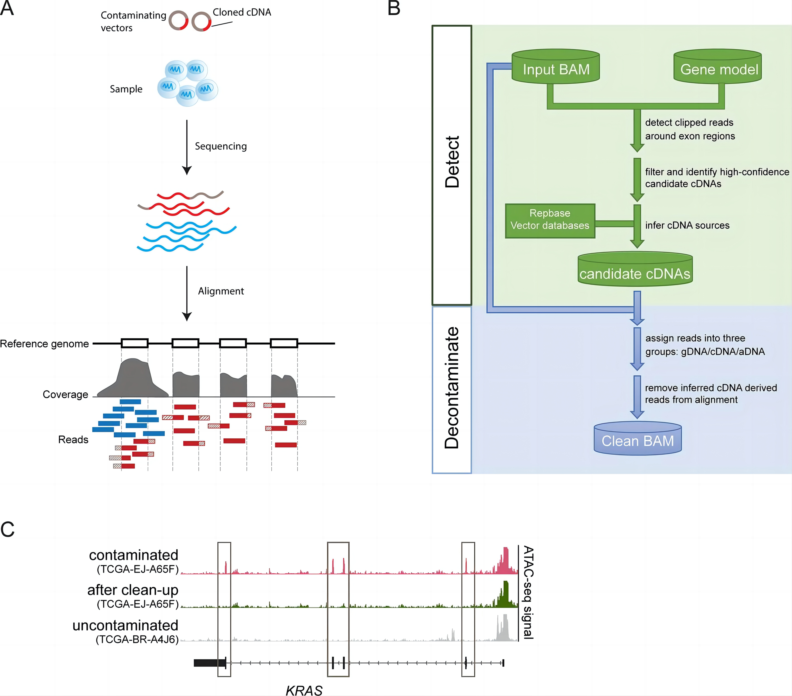
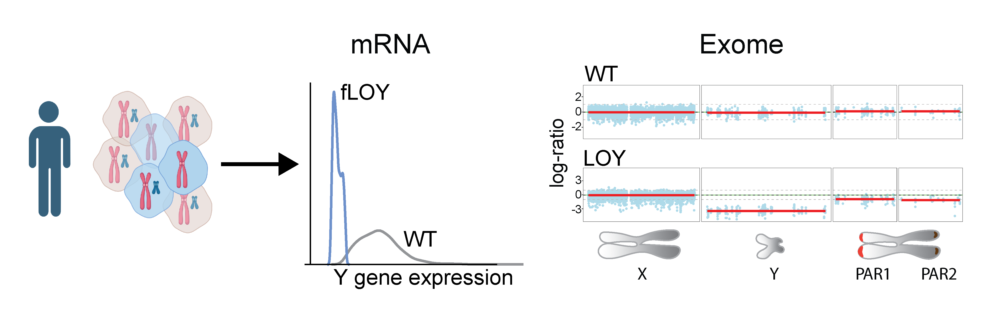

本实验室聚焦于癌症基因组学，开发和整合各种组学技术，包括bulk测序和单细胞测序技术，以探究基因组突变对疾病，尤其是肿瘤的影响。研究组对癌症和自身免疫性疾病中的性别差异机制非常感兴趣。
实验室的研究方向为：
(1) Y染色体丢失（LOY）的影响：探究LOY在癌症，特别是癌症转移中的作用；确定老年男性LOY的关键因素。
(2) 癌症发病率和结果中的性别差异：探寻可以解释癌症性别差异机制的关键突变和途径。
(3) 探索癌症新型治疗方案和开发新型药物。
(4) 工具开发：开发用于调用批量序列号和单细胞数据中拷贝数变化的工具；分析肿瘤发展过程中的进化。
Qi M, Pang J, Mitsiades I, Lane AA, Rheinbay E*. Loss of chromosome Y in primary tumors. Cell. 2023 Jul;
186(14):3125-3136.e11.https://doi.org/10.1016/j.cell.2023.06.006
Rheinbay E, Qi M, Bouyssou JM, Oler AJ, Thumm L, Makiya M, et al. Genomics of PDGFR-rearranged hypereosinophilic syndrome. Blood Advances. 2023 Jun 13;7(11):2558-63.
https://doi.org/10.1182/bloodadvances.2022009061
Qi M, Nayar U, Ludwig LS, Wagle N, Rheinbay E*. cDNA-detector: detection and removal of cDNA contamination in DNA sequencing libraries. BMC Bioinformatics. 2021 Dec;22(1):611.https://doi.org/10.1186/s12859-021-04529-2
Qi M#, Li Z#, Liu C, Hu W, Ye L, Xie Y, et al. CGT-seq: epigenome-guided de novo assembly of the core genome for divergent populations with large genome. Nucleic Acids Research. 2018;46(18):e107–e107.
https://doi.org/10.1093/nar/gky522
Wang J#, Qi M#, Liu J#, Zhang Y*. CARMO: a comprehensive annotation platform for functional exploration of rice multi-omics data. The Plant Journal. 2015;83(2):359–74.https://doi.org/10.1111/tpj.12894
实验室管家
sszhan@sinh.ac.cn
硕士研究生
zhangwenxiao2023@sinh.ac.cn
硕士研究生
jiaolin2023@sinh.ac.cn
硕士研究生
chenyidan2023@sinh.ac.cn
cDNA-detector是一种Python工具，用于检测和去除ATAC、ChIP、WES等测序数据（DNA）中来自载体和其他来源的污染cDNA。该工具分析BAM格式的比对文件（坐标排序），检测污染cDNA，并根据需要从BAM文件中删除可疑污染cDNA读数。

该工具用于分析配对肿瘤/正常的全基因组（WGS）和全外显子组（WEX）测序的性染色体（尤其是Y染色体）的拷贝数变异（CNV）。 该工具使用R包，详细描述可访问：https://www.biorxiv.org/content/10.1101/2022.08.22.504831v1. 该代码还引用了facets中的脚本 (详情可访问：https://github.com/vanallenlab/facets)，提高了系统的稳定性。

如果您对癌症基因组和自身免疫的研究感兴趣，并且在生物信息学、编程、统计学、数学或相关领域有很强的背景，欢迎直接给 Dr. Qi 直接发送邮件(mfqi@sinh.ac.cn)， 包括你的简历和主要课程的成绩单。工作时间不少于3个月。工资可用于支付生活费。